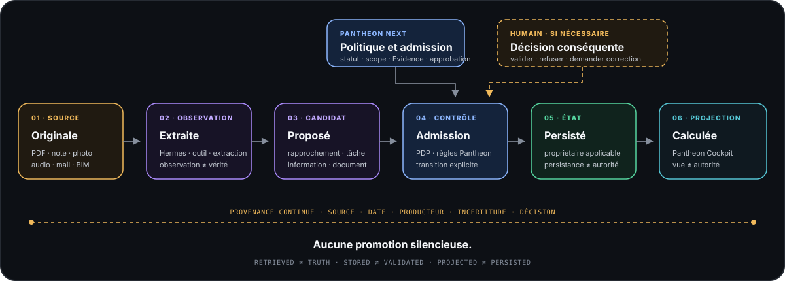

01 · Sourcereçue
Document reçu — indice C.
La source, sa version et son origine restent identifiables. Être retrouvé ne suffit pas à devenir vrai.

Professions libérales · intelligence professionnelle
L’IA accélère le travail. Pantheon préserve ce qui permet de lui faire confiance.
L’IA recherche, compare, synthétise et prépare en quelques secondes une partie du travail qui demandait auparavant des heures.
Pantheon conserve l’origine, le statut, les limites et l’autorité de ce qui traverse le dossier. Les outils peuvent changer ; le raisonnement et les décisions restent compréhensibles et attribués.
La différence Pantheon
Pantheon garde visible le passage entre ce qui est reçu, ce qui est produit, ce qui reste incertain et ce qui peut finalement faire autorité. L’objectif n’est pas d’ajouter une couche d’IA, mais d’éviter les promotions implicites.
La source, sa version et son origine restent identifiables. Être retrouvé ne suffit pas à devenir vrai.
Hermes ou un autre outil peut produire une observation ou une proposition. Une exécution réussie ne l’approuve pas.
Le conflit, les lacunes et les vérifications nécessaires restent exposés au lieu d’être lissés.
La décision reste explicite, située et attribuée. Une capacité disponible ne vaut jamais autorisation.
Pantheon ne décide pas à la place du professionnel. Il maintient les distinctions qui permettent de comprendre pourquoi une information, une action ou une décision peut être retenue.
Le nouveau problème
Un dossier peut réunir plusieurs personnes, plusieurs outils, de nombreux documents et des informations parfois contradictoires. La difficulté n’est plus seulement d’obtenir une réponse, mais de comprendre ce qu’elle vaut et comment elle s’inscrit dans le travail réalisé.
D’où vient cette information ?
Est-elle encore valable dans ce contexte ?
Qu’est-ce qui a été retrouvé, déduit ou interprété ?
Quelles hypothèses et quelles limites subsistent ?
Qu’est-ce qui peut réellement servir de base à une décision professionnelle ?
La réponse Pantheon
Pantheon n’est pas une intelligence artificielle supplémentaire. Il apporte un cadre commun pour que les personnes, les outils, les modèles et les connaissances contribuent à un même travail sans en effacer le contexte, les limites ni les décisions.
Un élément retrouvé ne devient pas automatiquement vrai, applicable ou autorisé.
Fait, hypothèse, interprétation, alerte et décision ne sont pas confondus.
Les absences, contradictions et vérifications nécessaires ne sont pas lissées.
Une capacité technique ou une proposition ne vaut jamais autorisation implicite.
Vue d’ensemble
Hermes assiste lorsque le travail demande compréhension ou rapprochement. Le chemin direct reste disponible pour les opérations déterministes.

Ce que cela change
Vous savez d’où viennent les informations, ce qu’elles signifient et ce qu’il reste à vérifier.
Le contexte, les évolutions et les raisons d’un choix restent compréhensibles dans le temps.
Les personnes et les outils collaborent sans que leurs productions soient confondues avec une décision.
L’IA accélère et prépare. Le jugement, l’arbitrage et la responsabilité restent professionnels.
Pour les métiers où chaque décision compte : architectes, ingénieurs, avocats, experts-comptables, professionnels de santé, bureaux d’études, consultants et organisations confrontées aux mêmes exigences de compréhension et de responsabilité.
Une logique simple
Une information peut être extraite, rapprochée ou reformulée par plusieurs composants. Elle ne devient un état professionnel qu’au travers d’une transition explicite, traçable et autorisée.
Six phases conceptuelles
Ces phases ne sont pas nécessairement six objets persistés. Elles rendent visibles les changements de nature et empêchent toute promotion silencieuse.

Transparence
La doctrine et les règles de gouvernance sont établies. Les interfaces et raccordements opérationnels restent en cours de stabilisation. Aucun prototype n’est présenté comme installé, activé ou autorisé.
Carte d’honnêteté
Une règle écrite n’est pas une capacité. Un vérificateur qui lit n’est pas un moteur qui décide. La colonne rouge, elle, est définitive.
Approfondir